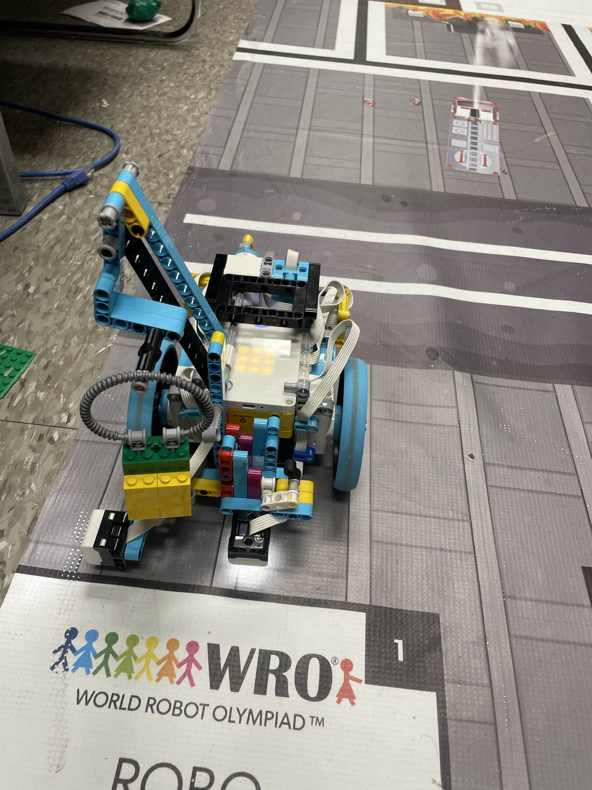
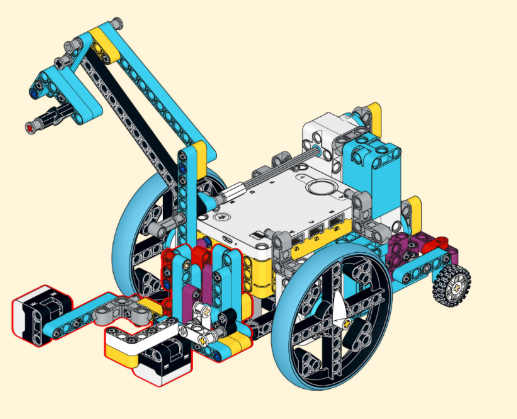
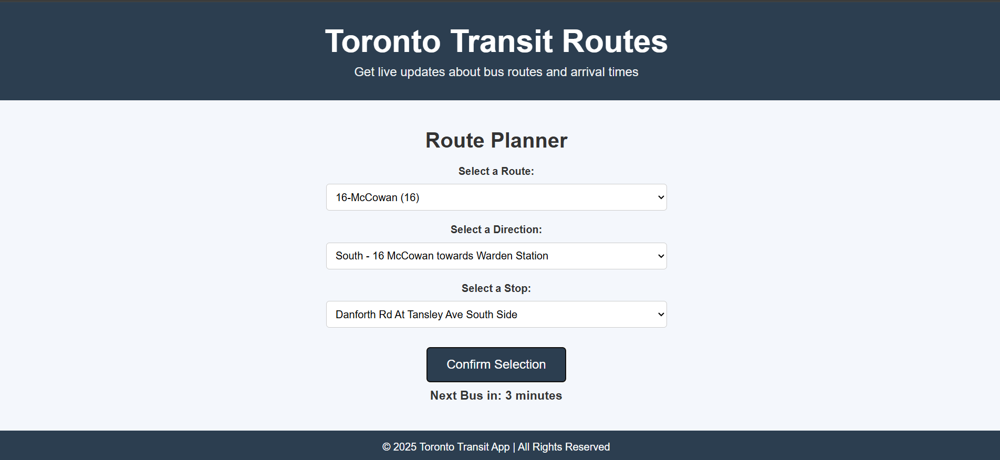
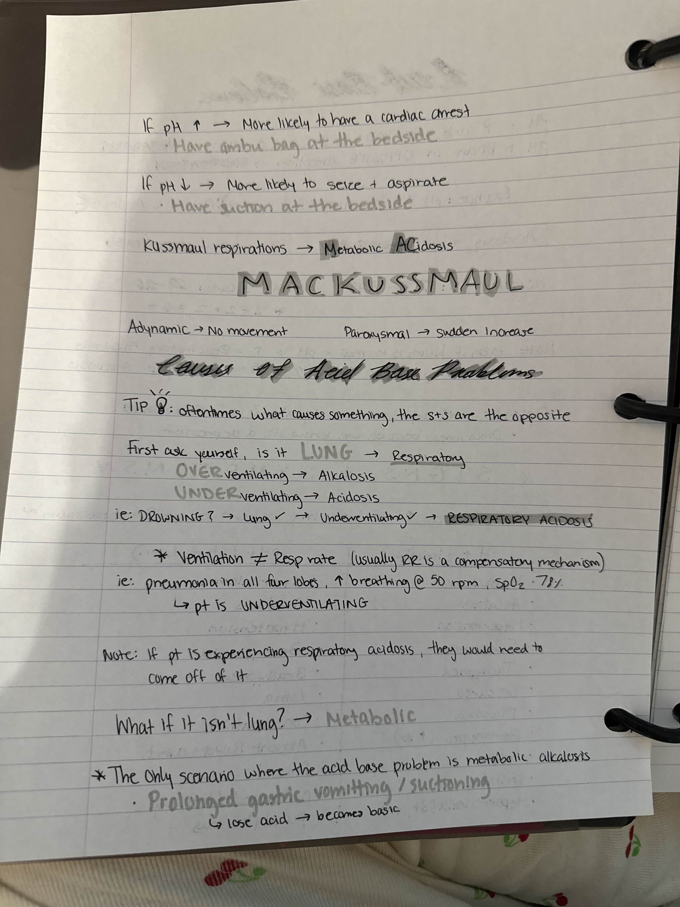
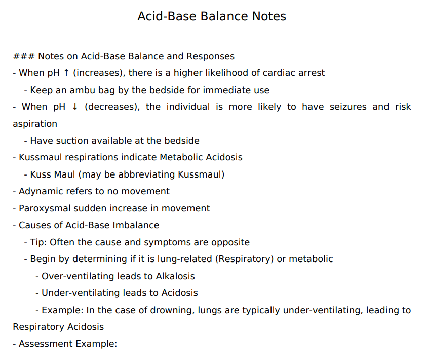

Welcome
Hi! I’m Mustafa Ahmadzai — a Computer Engineering graduate with a passion for all
kinds of programming, from full-stack development to robotics.
This portfolio showcases some of my personal projects, including an OCR pipeline, a robotics project,
and a distributed app using React, FastAPI, and gRPC.
Projects
Capstone Robotics Project — Completed


Built a Spike Prime robot to complete Junior-level WRO challenges using HSV color detection,
obstacle navigation, and automated pickup/drop-off systems.
Developed in MicroPython using PyBricks.
Real-Time Transit Tracker — Completed

Developed a full-stack app with a React frontend, FastAPI backend, and gRPC communication layer.
Designed for scalable deployment and real-time data exchange across multiple clients.
Handwritten Note Digitizer — Work in Progress


This tool uses OCR (Optical Character Recognition) to extract text from images of handwritten
notes, then intelligently restructures and formats the content into clean, readable PDFs using
AI.
Built using Python, Google Cloud Vision for OCR, and OpenAI's language model API, with FPDF for
final export. I plan to redevelop the app to make it accessible on mobile devices. Additionally, some
fine-tuning is needed.
About
I'm Mustafa Ahmadzai, a Computer Engineering graduate from Toronto Metropolitan University with a focus in Software Engineering.
I have 16 months of industry experience as a full-stack developer at SciCan,
where I contributed to front-end, back-end, and middleware solutions, as well as automated testing and internal tools.
My technical strengths span full-stack development, distributed systems, and embedded programming. I’ve built an OCR pipeline that enhances handwritten notes using AI, a robotics project for WRO competitions using MicroPython and LEGO Spike Prime, and a distributed transit tracker using React, FastAPI, and gRPC.
I’m passionate about building scalable, impactful software and continuously learning new technologies to improve product quality and user experience. I'm currently seeking new grad roles where I can contribute to high-impact teams and continue growing as an engineer.
Contact